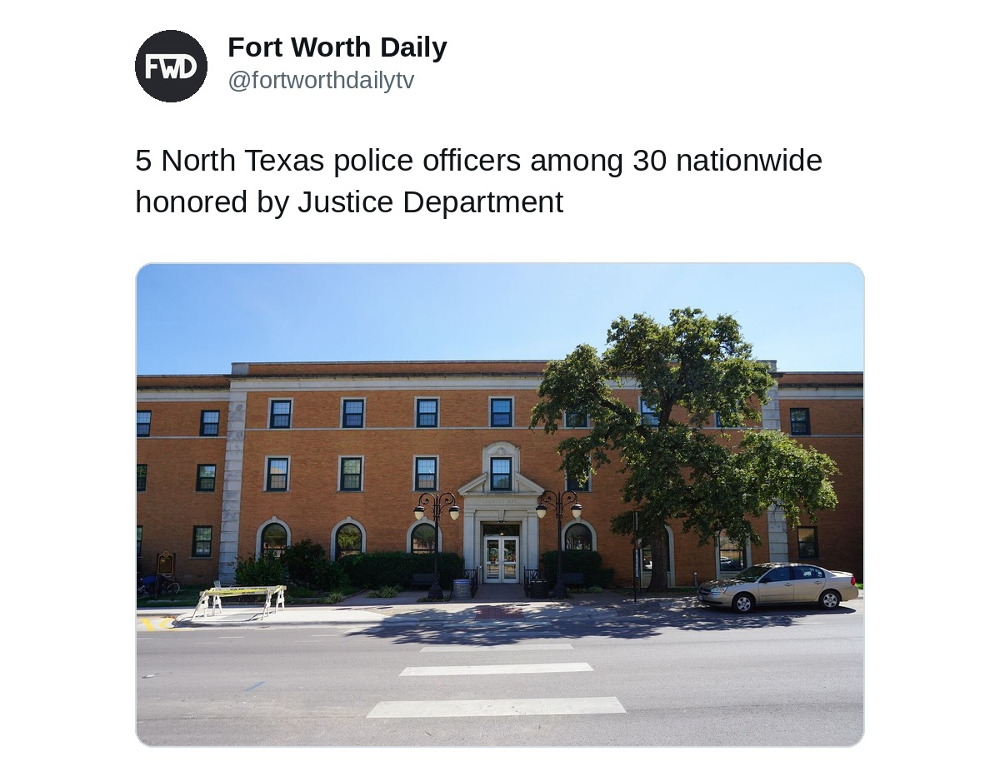

FWD
Fort Worth Daily
Just now · 🌎 · crime · template writer
Just now · 🌎 · crime · template writer
Officers from Fort Worth, Dallas and White Settlement were among law enforcement personnel nationwide recognized for exceptional service in policing.

FWD
story + scoring
{
"source": "WFAA",
"kind": "rss",
"score": 0.9842,
"relevance": 2,
"url": "https://www.wfaa.com/article/news/national/military-news/5-north-texas-police-officers-among-30-nationwide-honored-by-justice-department/287-acbc6501-0934-4ac0-a159-75e0164e81a7",
"image_license": "wikimedia-cc",
"image_credit": "Photo: Michael Barera via Wikimedia Commons (CC BY-SA 4.0)"
}